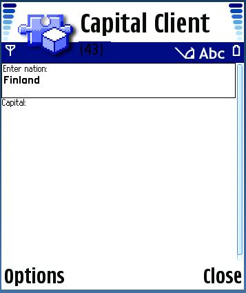
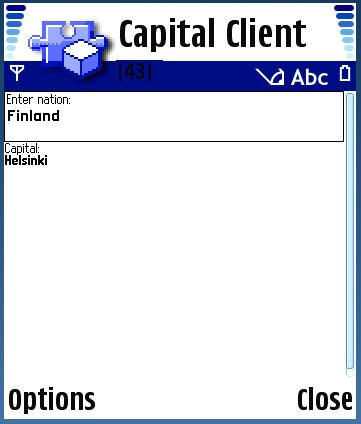
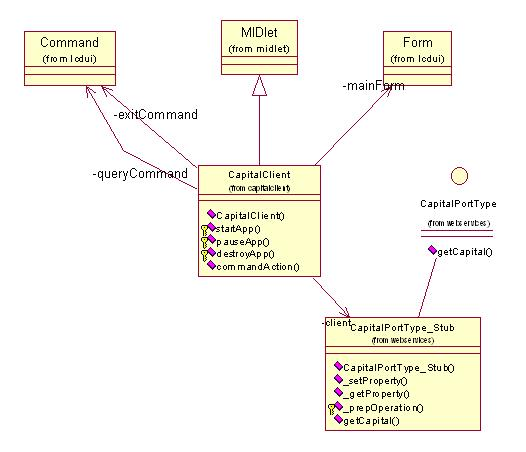

This example shows how a MIDlet accesses a web based service. The user interface provides an editable text field and two command keys. The text field is used to enter the name of a nation. One command key is a "Get capital" function key and the other command key is an "Exit" key. When the "Get capital" key has been pressed the name of the nation entered in the text field is sent to a web service. The web service looks up the capital of the given nation. When the "Exit" key is pressed the MIDlet exits.
The example makes use of the standard MIDP application framework and LCDUI API.
This example uses MIDP 2.0.
The example requires a running web service in order to function properly (see the Capital Servlet example).
The example is built using the standard method for building and running Java™ MIDlets.
The following classes should be included in the jar:
com.nokia.midp.examples.webservices.capitalclient.*
No resource files are used in the client.
When first launched, the application displays the screen shown below. The second screen shows the result of pressing the "Get captial" command key.


- At any stage during this example you can exit and restart the midlet.
Web Services are specified using an XML document written in WSDL (Web Services Description Language). This example provides an example WSDL file that defines a simple web based service to look up the capital of a given nation. Note that the URL of the webserver is encoded within the WSDL file. You must ensure that the address of your web server matches the entry in the WSDL file. TheWSDL file is used to generate a Java Interface and client stub class for use when accessing the web based service. For more information regarding the implementaion of the actual web service see the ClientServlet example servlet.
The following list and class diagram identify the classes used in this example.
Application classes
Generated Stubs and Interfaces
- CapitalClient - A MIDlet used to access a web based service(getCapital).

- CapitalPortType - The interface for the getCapital service
- CapitalPortType_Stub - The stub used when invoking the web service
This example has demonstrated how to use a web based service from within a MIDlet.